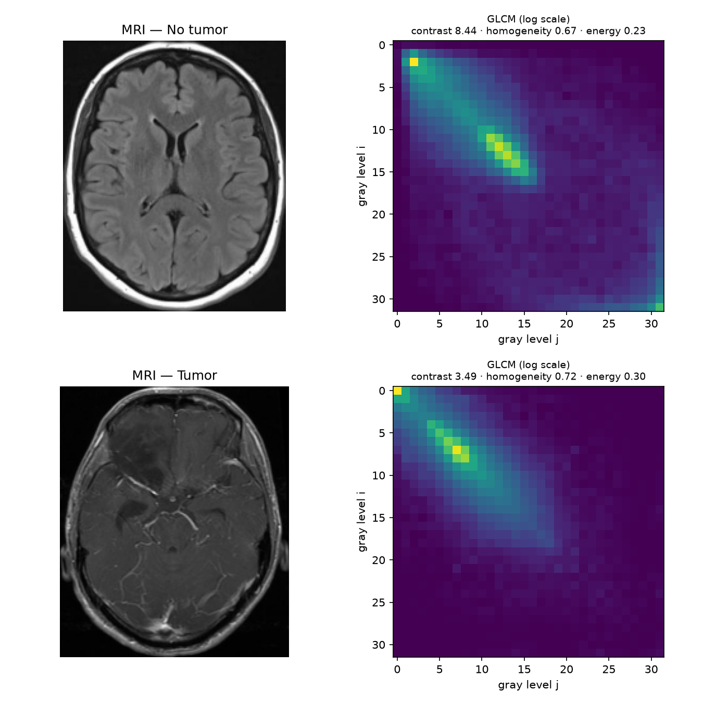

Research demo · not a diagnostic tool01 / Applied AI agent
MRI Radiomics Agent
A tool-using agent over an interpretable brain-MRI texture model. The custom harness includes typed tool calls, memory, on-demand skills, guardrails, per-step traces and CI-gated evals.
90.1%4-class accuracy
30eval scenarios
20automated tests